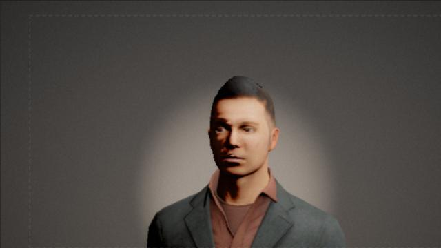
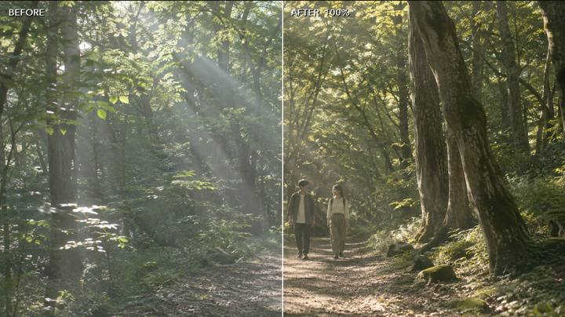
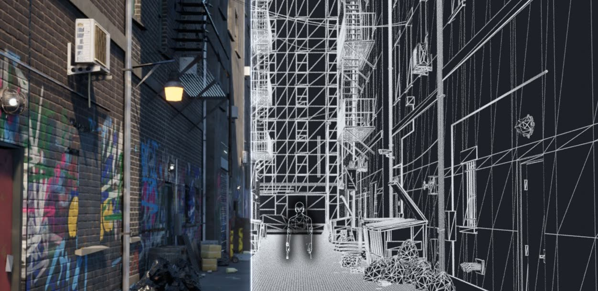

ORBIT
Light, color and tools for video makers
映像づくりのための、光・色・ツール

LIGHT LABFree lighting simulator · 無料の照明シミュレーター
Cinematic LUTsMake your footage look like film (free ones too) · 映像がシネマっぽくなる LUT（無料あり）日本の方は BOOTH で買えます
00:10:00:00 → 14,400 f1/48 s · 180° · ND8
BITRATE · SRT · CROP · TIMECODEFree video toolsCalculators that run in your browser · 撮影・編集の計算ツール（無料）

Video editing requestsEditing and color grading · 動画編集・色のご依頼（日本）Overseas / 海外の方は Fiverr